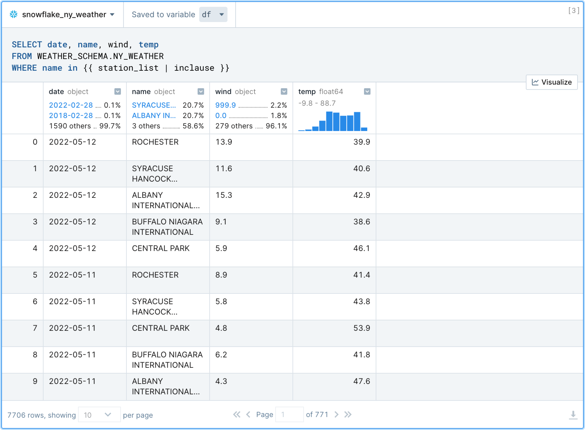

Deepnote brings Python and SQL into a collaborative data science notebook, along with a suite of low-code tools and tight integration with Snowflake. Altogether, Deepnote and Snowflake reduce the "time to insight" for teams as they explore their data.

In this quick-start guide, we will build an accelerated EDA workflow with Deepnote and Snowflake. Specifically, we look at various methods for effectively cleaning and visualizing weather readings; however, the techniques used can be applied more generally to any dataset used within Deepnote.
Prerequisites
- Familiarity with basic Python and SQL
- Familiarity with data science notebooks
What You'll Learn
This guide will walk you through a generalizable workflow for exploratory data analysis (EDA) using Deepnote and Snowflake. You will learn how to combine Python, SQL, and low-code solutions to complete common EDA tasks—including data wrangling and interactive data visualization.
What You'll Need
- A free Deepnote account
- A Snowflake account with admin access
- The weather dataset uploaded to your Snowflake database (uploading instructions here)
What You'll Build
You will use the EDA tools in Deepnote to explore weather patterns in New York city. By the end of the guide, you will have created a notebook that contains generalizable techniques—and one that demonstrates how Snowflake and Deepnote work together to solve the hardest data analysis problems.
To connect a Snowflake database to a Deepnote project, open the Snowflake integration modal and supply the associated Snowflake credentials (i.e., account, username, password). Note that the connection parameters to Snowflake are stored in the notebook as Python environment variables but can only be viewed by the workspace Admin.

Once you are connected, you will be able to browse your schema directly from Deepnote and query your tables with SQL blocks (described below).

Similar to Python code cells used in Jupyter notebooks, Deepnote also includes native SQL cells which include syntax highlighting and autocomplete based on the Snowflake schema. Hover your mouse on the border of block, click the ➕ sign, and select your Snowflake SQL block from the list. Now you can write SQL as you would in a standard SQL editor as shown below.
Notice that in the example below we can already start exploring the weather data via the rich DataFrame display. This includes being able to use filters, sorting, pagination, as well as examining histograms, ratios of values, and data types. Importantly, the results set is saved to a Pandas DataFrame (in this case df)—meaning that you can continue using Pandas or any other tool in the Python library ecosystem to further explore the data.

SQL queries in Deepnote also support the JinjaSQL templating language. This allows users to pass Python variables directly into SQL queries as well as use jinja-style control structures (conditionals and loops) for supplementing standard SQL.
In the example below, weather stations are filtered in the WHERE clause by passing in the python list called station_list rather than having to list them all out manually.
This is just one way to parameterize your SQL queries; we will see later how you can build a UI around your SQL blocks, allowing for interactive data exploration without having to repeat similar blocks of code, over and over again.


Deepnote provides no-code data visualization tools for streamlining EDA. Given the results of the query above, let's build a data visualization to quickly explore the expected weather patterns (again, click the ➕ sign to choose a chart block type). We should expect temperature to get warmer in the summer months and colder in the winter months.
Let's choose df as the DataFrame to visualize by selecting it from the dropdown at the top of the Chart block. Select "point chart" and specify how you would like to map columns of your data to the X/Y coordinates on the chart. Since we want to see temperature as a function of time, let's select date for the X axis and temp for the Y axis (example below).
Sure enough, we can verify the seasonality in the weather patterns—and all without a single line of code.

While the chart above confirms the expected seasonality, we can't see the data broken down by station (i.e., the location/city of the weather sensor). Since the name column contains this information, we can again use no-code charts to look at the average temp by name to get a sense of how locations/cities differ in terms of temperature.
As shown below, aggregations and other options can be selected by clicking the ellipsis next to the encoding channels (X, Y, and Color). Here, we can visualize average temperature by station name by selecting Average from the aggregation options on the X axis (which is set to temp), and setting the Y and Color channels to name.

Many chart types and encoding combinations can used to create helpful data visualizations. This can be helpful not only in terms of developer speed but also for non-technical team members who may not be as familiar with plotting via code. For more complex needs, nothing is stopping us from using Altair, Plotly, or any other Python visualization library in Deepnote.
Data exploration is iterative. Put another way—data exploration is repetitive. While analysts strive to follow the DRY principle (do not repeat yourself), EDA code and behaviour is often at odds with that principle (in practice). For example, an SQL query that neatly displays one aspect of the data is likely going to be copied and pasted, then slightly changed, in order to display another aspect of the data.
Deepnote understands this tendency and provides a set of rich, interactive widgets (called Input blocks) that can be used to parameterize your SQL queries (or Python code). That is, instead of copying and pasting around similar queries, quickly wire up a slider bar (or some other UI element) to scroll through dimensions of your data. This approach is great for readability, reproducibility, and ease of use (especially for those non-technical users). As usual, click the ➕ button above to choose from the available input blocks.
The SQL query below constructs binned temperature readings (i.e., similar to a histogram) so that we can examine a distribution of results. As you can see, the bin_size slider bar and name dropdown selector provide a small UI for controlling the variables passed into the SQL query. This way, we can look at binned results for any station we'd like (including tweaking the bin size) without having to write additional code.

As a bit of a bonus, and to bring things full circle, remember that the output of this SQL query is still a Pandas DataFrame; therefore, we can again use a chart block to visualize it further (and we should get an actual histogram). Perfect.

With Deepnote and Snowflake you get the best in class for secure data governance and rapid exploratory programming, together in the same place. Snowflake provides a single unified view of data and ability execute diverse analytics workloads—with near-unlimited scale, concurrency, and performance. Snowflake dovetails perfectly with Deepnote's collaborative data science notebook and suite of tools built for exploratory data analysis.
If you want to learn more about Deepnote's data science notebook platform, visit deepnote.com.
What we've covered
We have built a generalizable workflow for exploratory data analysis. Deepnote's Python, SQL, and low-code solutions make analyzing data in Snowflake straightforward and time efficient—even for team members without advanced technical knowledge. Apply these approaches to your own datasets to make exploratory data analysis more productive.